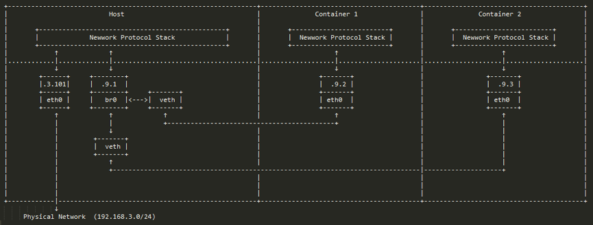
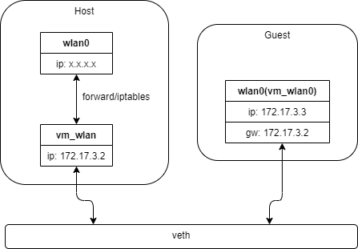

Virtual Ethernet And Bridge
本地以太网隧道，Linux container中用到一个叫做veth的东西，这是一种新的设备，专门为container所建。
参考文档
简要介绍
Linux container 中用到一个叫做veth的东西，这是一种新的设备，专门为 container 所建。veth 从名字上来看是 Virtual Ethernet 的缩写，它的作用很简单，就是要把从一个 network namespace 发出的数据包转发到另一个 namespace。veth 设备是成对的，一个是 container 之中，另一个在 container 之外，即在真实机器上能看到的。
veth设备总是成对出现，送到一端请求发送的数据总是从另一端以请求接受的形式出现。创建并配置正确后，向其一端输入数据，VETH会改变数据的方向并将其送入内核网络子系统，完成数据的注入，而在另一端则能读到此数据。（Namespace，其中往veth设备上任意一端上RX到的数据，都会在另一端上以TX的方式发送出去）veth工作在L2数据链路层，veth-pair设备在转发数据包过程中并不串改数据包内容。
显然，仅有veth pair设备，容器是无法访问网络的。因为容器发出的数据包，实质上直接进入了veth1设备的协议栈里。如果容器需要访问网络，需要使用bridge等技术，将veth1接收到的数据包通过某种方式转发出去。

veth

host veth
创建设置虚拟网卡流程
static void config_host_net_work(int pid) { if (pid <= 0){ ALOGD("pid <= 0"); return; } system("ip link add name vm_wlan type veth peer name vm_wlan0"); ALOGD("ip link add name vm_wlan type veth peer name vm_wlan0 errno=%s",strerror(errno)); system("ifconfig vm_wlan 172.17.3.2 netmask 255.255.0.0 up"); ALOGD("ifconfig vm_wlan 172.17.3.2 netmask 255.255.0.0 up errno=%s",strerror(errno)); system("echo 1 > /proc/sys/net/ipv4/ip_forward"); ALOGD("echo 1 > /proc/sys/net/ipv4/ip_forward errno=%s",strerror(errno)); system("iptables -t nat -A POSTROUTING -s 172.17.0.0/16 -o wlan0 -j MASQUERADE"); ALOGD("iptables -t nat -A POSTROUTING -s 172.17.0.0/16 -o wlan0 -j MASQUERADE errno=%s",strerror(errno)); system("iptables -t filter -A FORWARD -i wlan0 -o vm_wlan -j ACCEPT"); ALOGD("iptables -t filter -A FORWARD -i wlan0 -o vm_wlan -j ACCEPT errno=%s",strerror(errno)); system("iptables -t filter -A FORWARD -o wlan0 -i vm_wlan -j ACCEPT"); ALOGD("iptables -t filter -A FORWARD -o wlan0 -i vm_wlan -j ACCEPT errno=%s",strerror(errno)); char buf[150]; memset(buf,0,sizeof(buf)); snprintf(buf, sizeof(buf), "ip link set vm_wlan0 netns %d", pid); system(buf); ALOGD("%s errno=%s",buf,strerror(errno)); };
system(“ip link add name vm_wlan type veth peer name vm_wlan0”);
创建虚拟网卡叫vm_wlan，以及其对应的对等虚拟网卡叫vm_wlan0
system(“ifconfig vm_wlan 172.17.3.2 netmask 255.255.0.0 up”);
配置vm_wlan的IP及掩码，启动vm_wlan
system(“echo 1 > /proc/sys/net/ipv4/ip_forward”);
使能IP转发
system(“iptables -t nat -A POSTROUTING -s 172.17.0.0/16 -o wlan0 -j MASQUERADE”);
不管现在wlan0的出口获得了怎样的动态ip，MASQUERADE会自动读取wlan0现在的ip地址然后做SNAT出去，这样就实现了很好的动态SNAT地址转换。
对于MASQUERADE，只是计算机的负荷稍微多一点。因为对每个匹配的包，MASQUERADE都要查找可用的IP地址，而不象SNAT用的IP地址是配置好的。当然，这也有好处，就是我们可以使用通过PPP、 PPPOE、SLIP等拨号得到的地址，这些地址可是由ISP的DHCP随机分配的。
配置SNAT，将从172.17.0.0/16发出的网络包的 soruce IP address 替换为 wlan0 的 IP 地址
system(“iptables -t filter -A FORWARD -i wlan0 -o vm_wlan -j ACCEPT”);
过滤目标地址和源地址都不是本机的输入信息都转发给vm_wlan
system(“iptables -t filter -A FORWARD -o wlan0 -i vm_wlan -j ACCEPT”);
过滤目标地址和源地址都不是本机的输出信息都转发给wlan0
snprintf(buf, sizeof(buf), “ip link set vm_wlan0 netns %d”, pid);
转移vm_wlan0到pid的namespace空间
guest veth
设置虚拟网卡
static void config_vm_net_work(void) { system("ip link set vm_wlan0 name wlan0"); ALOGD("ip link set vm_wlan0 name wlan0 errno=%s",strerror(errno)); system("ifconfig wlan0 172.17.3.3 netmask 255.255.0.0 up"); ALOGD("ifconfig wlan0 172.17.3.3 netmask 255.255.0.0 up errno=%s",strerror(errno)); system("route add default gw 172.17.3.2"); ALOGD("route add default gw 172.17.3.2 errno=%s",strerror(errno)); };
system(“ip link set vm_wlan0 name wlan0”);
重置vm_wlan0网卡名字为wlan0
system(“ifconfig wlan0 172.17.3.3 netmask 255.255.0.0 up”);
配置vm_wlan的IP及掩码，启动vm_wlan
system(“route add default gw 172.17.3.2”);
设置虚拟网卡路由
lxc network
/var/lib/lxc/zengjf/config
# Template used to create this container: /usr/local/share/lxc/templates/lxc-busybox # Parameters passed to the template: # Template script checksum (SHA-1): 8c9eecce226b033822811007be8946118486872e # For additional config options, please look at lxc.container.conf(5) # Uncomment the following line to support nesting containers: #lxc.include = /usr/local/share/lxc/config/nesting.conf # (Be aware this has security implications) lxc.net.0.type = empty lxc.apparmor.profile = generated #lxc.apparmor.allow_nesting = 1 lxc.rootfs.path = dir:/var/lib/lxc/zengjf/rootfs lxc.signal.halt = SIGUSR1 lxc.signal.reboot = SIGTERM lxc.uts.name = "zengjf" lxc.tty.max = 1 lxc.pty.max = 1 lxc.cap.drop = sys_module mac_admin mac_override sys_time # When using LXC with apparmor, uncomment the next line to run unconfined: #lxc.apparmor.profile = unconfined lxc.mount.auto = cgroup:mixed proc:mixed sys:mixed lxc.mount.entry = shm /dev/shm tmpfs defaults 0 0 lxc.mount.entry = /lib lib none ro,bind 0 0 lxc.mount.entry = /usr/lib usr/lib none ro,bind 0 0 lxc.mount.entry = /sys/kernel/security sys/kernel/security none ro,bind,optional 0 0
lxc-start zengjf
lxc-console zengjf
ifconfig -a
lo Link encap:Local Loopback LOOPBACK MTU:65536 Metric:1 RX packets:0 errors:0 dropped:0 overruns:0 frame:0 TX packets:0 errors:0 dropped:0 overruns:0 carrier:0 collisions:0 txqueuelen:1000 RX bytes:0 (0.0 B) TX bytes:0 (0.0 B)
-
NETWORK
lxc.net.[i].type